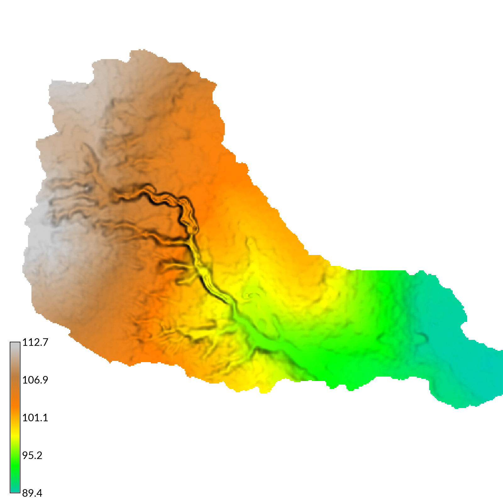
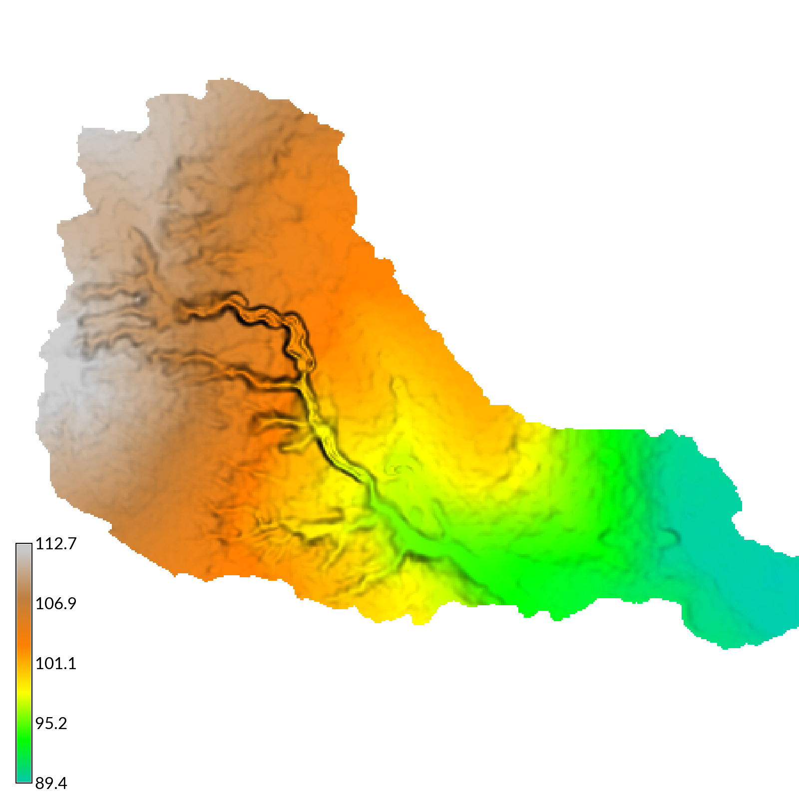
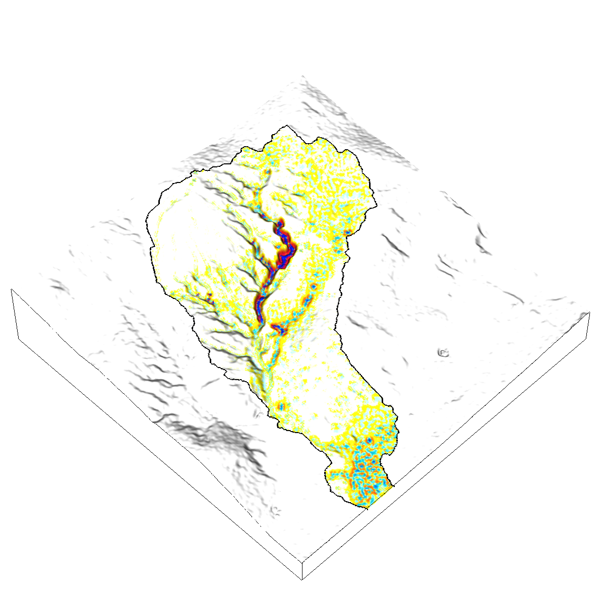
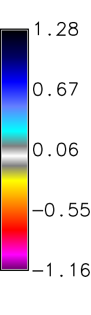
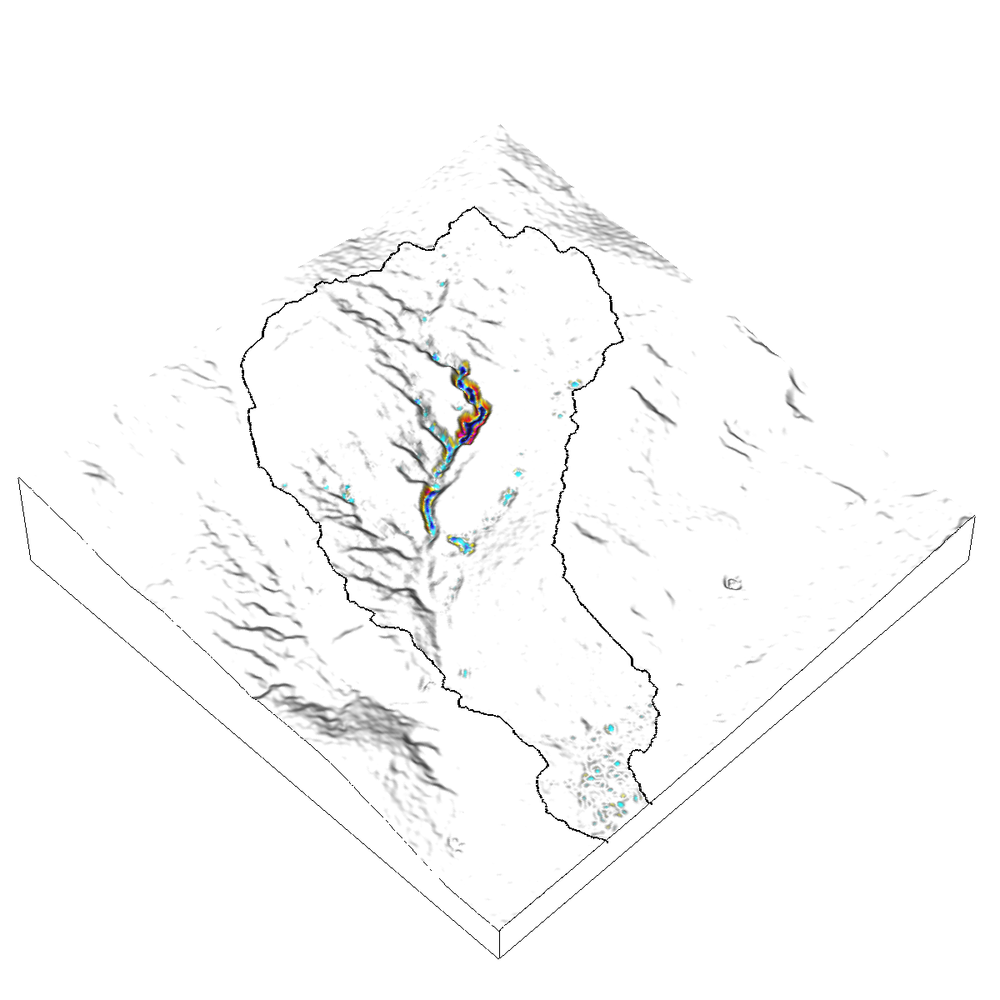
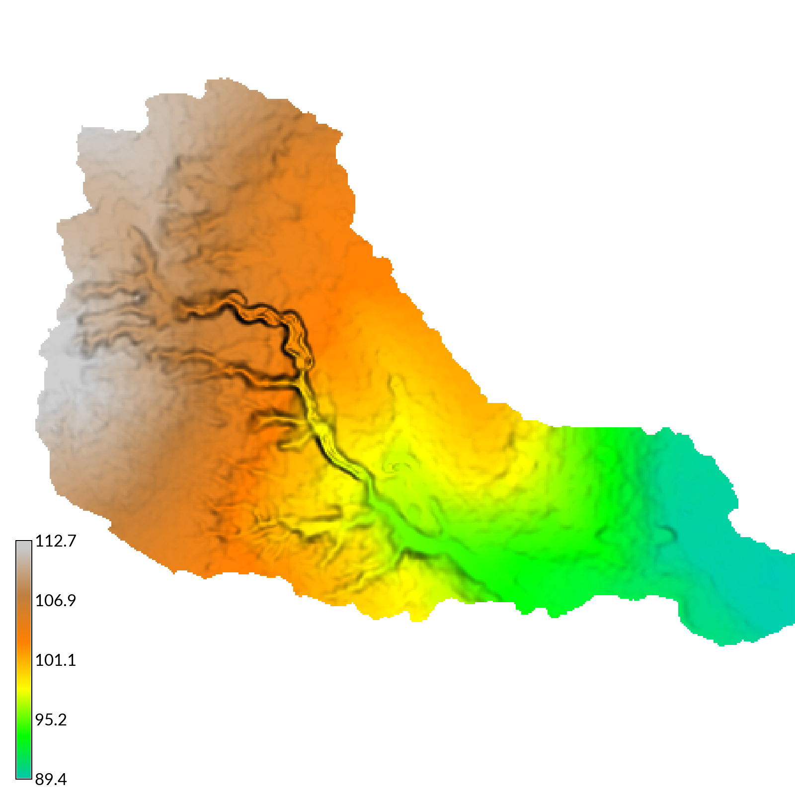

r.sim.terrain is a short-term landscape evolution model that simulates topographic change for both steady state and dynamic flow regimes across a range of spatial scales. It uses empirical models (RUSLE3D & USPED) for soil erosion at watershed to regional scales and a physics-based model (SIMWE) for shallow overland water flow and soil erosion at subwatershed scales to compute short-term topographic change. This either steady state or dynamic model simulates how overland sediment mass flows reshape topography for a range of hydrologic soil erosion regimes based on topographic, land cover, soil, and rainfall parameters.
g.mapset -c mapset=transport location=nc_spm_evolution g.region region=region res=0.3 r.mask vector=watershed r.sim.terrain -f runs=event mode=simwe_mode rain_intensity=50.0 rain_interval=120 rain_duration=10 \ walkers=1000000 detachment_value=0.01 transport_value=0.0001 manning=mannings runoff=runoff
  
Erosion-deposition (kg*m/s^2)and net difference (m) for a steady state, transport limited SIMWE simulation of a 120 min event with a rainfall intensity of 50 mm/hr

ERROR: nwalk (7000001) > maxw (7000000)!
Brendan A. Harmon
Louisiana State University
brendan.harmon@gmail.com